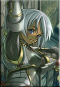

Guildes
Tendre Aurore
Celryndel
 Sexe : Femme
Sexe : Femme
Race : Elfe
Faction : Alliance
Formation : Chasseur
Plus d'infos sur Celryndel >>>
Lire le récit de Celryndel >>>
Cymbelîne
 Age : 36 ans
Age : 36 ans
Sexe : Femme
Race : Humain
Faction : Alliance
Formation : Voleur
Description : Je suis arrivée à l'abbaye de Northshire très tôt. Mon père, qui m'avait élévé seul jusque là depuis que ma mère était morte en couches, m'y avait emmené. Je ne l'ai revu depuis qu'en de très rares occasions...il demeure encore à ce jour un mystère pour moi.
On me donna une éducation de prêtresse.
Très vite, je me suis aperçue que mon manque de sagesse et de patience ne faisait pas bon ménage dans un environnement studieux.
Les jours s'écoulèrent à l'abbaye, plus ou moins heureux en compagnie de ma meilleure amie, Erianne. nous grandîmes ensemble, partageant tout...nos rêves,espoirs, peines, secrets, confidences...
Erianne mourut en des circonstances étranges quelques jours avant de venir me rejoindre à l'orphelinat de Stormwind où j'avais été envoyé pour aider, nos classes terminées.
Je suis toujours à la recherche du médaillon que je lui avait confié en attendant qu'elle me rejoigne...le médaillon contenait une portrait miniature de celle qui m'a donné la vie, ainsi qu'une mèche de ses cheveux. Un cadeau que m'avait offert mon père lors d'une de ses si rares manifestations.
Plus d'infos sur Cymbelîne >>>
Lire les 72 récits de Cymbelîne >>>
Elhoïnah
Age : 19Sexe : Femme
Race : Humain
Faction : Alliance
Formation : Guerrier
Description : Elhoïnah ... Elhoïnah Holpekh, tel était le nom de la fille qui venait de naître dans la forêt des Pins Argentés, lorsque celle ci n'était pas encore souillées par le Fléau et les Réprouvés.
Elhoïnah menait une jeunesse tout à fait banal, une jeune fille dont les parents étaient fermiers.
La famille avait toujours de quoi manger, un toit sur la tête... Enfin bref, elle n'étais pas dans le besoin, même l'avenir d'Elhoïnah semblait lui sourire et lui tendre les bras.
Elhoïnah était une jeune fille, ravissante, belle, tout les jeunes hommes du voisinage ne voyait qu'elle, mais Elhoïnah ne semblait avoir d'yeux que pour un seul homme, un homme de bonne famille, les parents des deux amoureux avaient même acceptés que ceux-ci se marient.
Mais ... un beau matin, tout changea ...
Elhoïnah était partie dans les bois, avec son aimable chaton blanc qu'elle venait juste d'avoir, ramasser des champignons pour sa mère, tout allait bien, jusque là ... Mais des cris de terreur se firent entendre depuis les hammeaux de fermes.
Elhoïnah accourue, et là ... Quelle spectacle de désoliation, une horde d'étrange soldats tuaient tout ce qu'ils voyaient, on pouvait voir des groupes de soldats défendant tant bien que mal les paysans de cette étrange armée qui semblait grossir à vue d'oeil.
Elhoïnah prit le chemin menant à la ferme de ses parents à toute vitesse, ses parents étaient en train d'ammasser le plus de provisions possible, comme si ils se préparaient a fuir.
"_Elhoïnah, ma petite fille, il faut que l'on fuit et vite ! Pas le temps de prendre tes robes et tes parfums ... *la mère d'Elhoïnah la prit par l'épaule et lui força le chemin*
_ Mais ... mais ... *dit Elhoïnah ne comprenant pas trop ce qu'il se passait*
Un groupe de soldats arriva a toute hate.
_ Vite ! Ne restez pas là ! Des barques attendent les fermiers sur les plages de Tiristfal, hatez vous ! *dit le capitaine à la famille*
Mais, le groupe de soldats étaient poursuivi par l'ennemi qu'Elhoïnah ne conaissait pas encore ... Et là, elle pu apercevoir ces horribles choses qui fendaient sur eux tels des furies affamées.
Les soldats bradissèrent leurs armes et leux boucliers et se mirent en formation contre cette horde de déchainés.
la mère d'Elhoïnah prit sa fille dans les bras, la trainant le plus loin possible pour fuir, Elhoïnah était térorisée par ce qu'elle venait de voir, mais ... Ce n'était rien comparé à la suite.
Les soldats combataient à peine perdue l'ennemi qui semblait les submerger, le père d'Elhoïnah regardait les soldats qui se battait avec un sentiment d'impuissance, celui-ci ne tarda pas à empoigner une fourche qui trainait sur le sol et se rua vers les soldats pour les aider, Elhoïnah et sa mère crièrent de toute leur force pour le faire revenir, mais en vain.
Tout d'un coup, une vois tonitruante se fit entendre sur la colinne non loin, Elhoïnah et se mère pensèrent que c'était un mage du kirin Tor venant à leur secour, mais il n'en était rien ... Celui ci, d'une terrible voix rauque, fit sortit des cadavres du sols et les envoya sur le groupe de soldats et sur le père d'Elhoïnah.
Ceux-ci tombèrent, tous mort ... Mais le spectacle macabre n'était pas encore finit ... Le mage, de sa voix rauque, prononça encore une fois des formules tout en regardant son grimoire, les soldats morts ainsi que le père d'Elhoïnah se relevèrent d'entre les morts, se ruant à leur tour vers les deux femmes, celles-ci courirent, a toute jambe, le plus vite qu'elles le pouvaient ... Mais par chance, des nobles cavaliers passèrent par là et se mirent à combattre les morts-vivants, les deux femmes continuèrent a courir, elles avaient largement semées leurs poursuivant grace à la cavalerie, mais, même de loin, la voix rauque du mage raisona à nouveau ...
Aprés une terrible course, les deux femmes arivèrent aux plaines de Tiristfal, elles marchèrent, épuisées, triste, en sanglotant vers la côte.
Par chance, elles trouvèrent les barques, enfin ... la barque.
Et elles longèrent la côte vers le Sud... Des rumeurs disaient que Stormwind était en reconstruction aprés l'attaque des Dragons et de la Horde des Orcs.
Des jours passèrent ... jusqu'au matin, où aprés un dur someille, les barques échouèrent sur les plages de la Marche de l'Ouest.
Une patrouille de milliciens passèrent par là.
_ Hey ! Réveillez vous mesdames ! *dit l'un d'eux*
_Haaa ... la plus agée et morte ... De faim et fatigue on dirait ...*dit un autre*
_ Peut être la mère de le jeunne femme ...
_Allez ... Emmènons la petite à l'Abbaye ... On manque de soldats aprés tout ! Au moins, ça sera le mieux pour elle que de vagabonder dans les rues de Stormwind."
*L'un d'eux prie Elhoïnah sur ses épaules et l'emmena à l'Abbaye, les autres allèrent entérer la mère*
Gimsy Hoplekh : La mère de Elhoïnah, originaire de Baie-du-Butin, elle travaillait dans une taverne comme cuisinière, elle rencontra un splendide commerçant et s'en alla s'installer sur les terres du Nord avec celui ci.
Hölmerh Holpekh : Commerçant/fermier dans les terres du Nord, il rencontrit la mère de Elhoïnah (Gimsy) a Baie-du-Butin lors d'une visite marchande.Ils donnèrent naissance a Elhoïnah dans les Pins Argentés, dans leur modeste foyer, une ferme.
Pépé Holpekh : Petit Gnome ayant servit dans la flote du Kul'Tiras comme Cannonier, il receuilli Hölmerh qui trainait à l'époque dans les rues de Lordearon, il lui inculqua les valeurs du travails. Elhoïnah l'aimait beaucoup, mais depuis la Peste, elle n'a plus eu de nouvelles.
[Suite de l'hsitoire]
Elhoïnah se réveilla à l'Abbaye de Northshire, elle était vêtue de simple habits de paysan, elle était affamée et désorientée.
Un vieille homme rentra dans la chambre.
"_Déja réveillée mon enfant ?
_ Heu... oui oui. *répondit Elhoïnah sur un ton fatigué et appeuré*
_Voyons mon enfant, n'ayez crainte, je suis là pour vous aider.
_Je...je suis où ? Et où est ma mère ?!
_ Calmez vous calmez vous... Votre mère est ... morte... *il s'intérompit en voyant Elhoïnah tombée en sanglot*
_ *tout en sanglotant* Vous mentez ! Vous mentez !
_ pourquoi mentirais-je ? je suis un homme de foi, non un menteur. *Le vieille homme partit, laissant Elhoïnah sangloter seule dans la chambre*
Des jours passèrent, Elhoïnah restait à pleurer dans une chambre, un jour, le vielle homme revint.
_Bonjour mon enfant, il va falloir pour vous, quitter l'Abbaye, nous recevons chaque jours des personnes victimes elles aussi de la guerre, et l'Abbaye commence à être saturée. Pour vous évitez le vagabondage dans les rues, j'ai réussi à trouver un maître d'armes n'ayant pas d'élèves en ce moment, allez le voir demain matin, il sera au Goldshire, à l'auberge. Je vous accorde une nuit de plus ici, demain, vous devrez partir.
Elhoïnah ne dit mot, soupirant de tristesse.
Le lendemain matin, Elhoïnah quitta l'Abbaye, le matin était frais, elle marcha dans les bois, en direction du Goldshire, elle avait peur des grondement des loups qu'elle entendait, des ombres se cachant derrière des arbres.
Elhoïnah arriva, aprés une heure de marche, au Goldshire, il y'avait une foule, c'était jour de marché, Elhoïnah, affamée qu'elle était, réussi a voler des pommes sans se faire remarquer et les mangea toute d'un trait.
Elle décida de rentrer de l'auberge pour trouver l'homme en question, mais celle-ci était remplie de monde, des soulards, des paysans ivres, des femmes trés peu recommandable, des soldats en manque de femmes, et ça chantait a tue tête, ça criait, ça dansait... Enfin, pas un endroit pour les petite fille comme Elhoïnah.
Justement, Elhoïnah vit un homme balafré, portant un cache-oeil, de forte corpulence, chauve et le regard mauvais.
Elhoïnah s'approcha de cet homme.
_ Heu... sire, vous êtes maître d'armes ?
_ Dégages gamine, je n'ai pas de temps à accorder aux enfants...
_Mais... Mais c'est père Héstain qui m'envoie pour que je vois un maître d'armes qui puisse m'enseigner quelque chose... pour pas finir dans les rues qu'il m'a dit...
_ *soupir et commença à s'énerver* Pourquoi ce vieux sénile m'evoie une pauvre gamine de ton genre ?!
_*intimidée, n'osant dire mot* ... Il m'a dit que vous avez une dette envers lui ... Alors il voulait que vous... vous m'enseignez quelque chose.
_Ce que je vais t'enseigner petite, c'est de te faire taire à coups de batons si tu continues à m'agacer !
Elhoïnah sortit en courant de l'auberge en pleurant, sous les rires des ivrognes.
Elhoïnah passa toute la journée à vagabonder dans les bois. Le soir venue, elle était revenue au Goldshire, et avait réussi a s'introduire dans la cave pour y dormir ainsi qu'a voler quelques morceaux de viandes pour se nourir.
La nuit tombée, elle s'endormit dans un coin sombre dans la cave. L'auberge était calme.
Le soleil se leva, le matin arriva. L'aubergiste descendit justement à la cave pour y prendre un tonneau et vit Elhoïnah.
_Que fais tu là toi ?! *il saisit Elhoïnah par le cou et la traina jusqu'en haut pour la jeter en plein milieu de la taverne, l'homme balafré était là*
_Mais... mais ... *Elhoïnah se mit à pleurer*
_Ha ! J't'y prend sale petite voleuse ! J'm'en vais t'ammener auprés d'la garde moi ! Qu'on te jette en prison ! j'te l'dis ! *cria l'aubergiste sur un ton trés énervé*
_ Mais ... *Elhoïnah continuais à pleurer*
*L'homme balafré se leva et saisit Elhoïnah par l'épaule*
_ Laissez aubergiste, je m'en occupe, tenez *il jette une bourse remplie de pièces d'argent à l'aubergiste*
_Hoooo... Merci bien Maître Freth. *il pointe du doigt Elhoïnah* Petite, j'te l'dis, t'as d'la chance !
_Bien...Maintenant gamine, suis moi. *Freth pris Elhoïnah par l'épaule et l'emmena prés de la forge* Bon... Je vais t'entraîner car je suis redevable à ce vieux Hestain ! Alors écoutes car et suis bien mon enseignement car je ne me répèterais pas !
_Heu... *Elhoïnah sèche ses larmes* oui oui ...
_Déja, d'une part, arrêtes de chialer !
_Heu ... oui. *sèche encore une fois de plus ses larmes*
_*Freth perdis patiente et mis une violente giffle à Elhoïnah* Quand je dis, tu le fais tout de suite !
Des mois passèrent... des années passèrent... Elhoïnah eu ses 14 années.
_Alors Elhoïnah... Revoyons ce que je t'ai enseigné... En garde petite !
_*Elhoïnah portais une légère armure en maille, un petit glaive et un vieux bouclier en bois, tandis que Freth, lui, était vêtue d'une belle armure en plaque et d'une épée à deux mains faisant deux fois la taille d'un grand homme* Bien... *se mit en garde*
_Ne te combre pas lorsque tu te mets en garde ! Tiens toi droite bon sang ! *le combat commença*
Freth engagea le combat, Elhoïnah parait les coups tant bien que mal.
_Ne recules pas ! Attaque que diable ! *lève son épée en l'air qui s'abbat sur le bouclier d'Elhoïnah et le vit voler en éclat* Rhaaaaa ! Mais tu es vraiment stupide, je me demande vraiment pourquoi ce vieux Héstain voulait que je t'enseigne l'art de se battre ! Tu ne sais vraiment rien faire !
_ Mais ... maître... *recommença à pleurer*
_Je t'avait dit d'arêtez de chialer bon sang ! *il donna un violent coup de pied à Elhoïnah, ce qui la fit tomber par terre, dans la boue.* Maintenant... Va dormir à l'auberge, ta vue commence à me donner la nausée ! Et plus vite que ça !
Elhoïnah s'ensuit en courant jusqu'a l'auberge. Des mois passèrent, des années passèrent.
Freth réveilla Elhoïnah tôt le matin et la traina dehors.
_Allez, réveille toi petite sote ! Prend ce bouclier et cette épée ! Y'a des défias dans la zone, me demande pas qui ils sont et contente toi juste de me raporter leurs têtes ! N'éprouves aucun sentiment et tues les, c'est tout, tu as bien compris ?!
_Oui Maître. *Elhoïnah pris le bouclier et l'arme, et combatit des Défias toute la journée durant*
Le soir arriva... Elhoïnah revint à l'auberge, fatiguée, l'arme et le bouclier couvert de sang et un sac qui avait pris le tein rouger sang.
Elhoïnah jeta le sac au pied de Freth.
_ Voila Maître... Treizes têtes, c'est tout ce que j'ai pu avoir...
_ *a moitié saoul* Hahahaha ! Ces brigans ont du être étonnés de voir qu'une gamine comme toi savait se battre ! Allez, boit ça ! *Il tend une chope à Elhoïnah*, allez bois je te dis !
_ Mais... Mais ...
_ Bois je te dis ! *il giffla encore une fois violemment Elhoïnah* Tu vas boir idiote ?!
_ Heu... *se retant de pleurer* Oui ... Oui ...*Elhoïnah prit la chope et la bu d'un coup sec, grimaçant*
_ Haha ! Au faite petite idiote ... Y'a le vieux Héstain qui veux te revoir ! il a des choses a te dire, alors demain matin t'iras le voir, c'est compris ?!
_ Oui ... *à la tête qui tourne légèrement et la vue qui deviens flou* Oui Maître.
_Allez, maintenant vas te coucher !
Elhoïnah monta à la chambre qu'elle avit pris l'ahbitude de prendre chaque soir.
Le matin vint.
Elhoïnah se réveilla, mangea un morceaux de pain, et retraversa la forêt pour revenir à l'Abbaye.
_ Heu .. Garde, où est Père Héstain ?
_ Il est en train de prier petite ... Attend le là.
Elhoïnah s'assit sur une barrière pour attendre. Le Père Héstain sortit de l'Abbaye au bout de quelques heures.
_ Haaaaa ... Mon enfant, escusez moi si je vous ai fait attendre.
_ *fait une révérence*... Ce n'est rien Père Héstain.
_Voila ... J'ai appris que tu étais du royaume de Lordearon... n'est ce pas ?
_ Ho, oui oui.
_ Bien... Maître Freth t'a t'il bien appris l'art de combattre ?
_Heu... oui... Enfin, il est tout le temps saoul et violent...
_ Mon enfant, ne parlez pas comme ça de Maître Freth, il est certes spéciale, mais pas comme vous le décrivez.
_Mais... mais...
_ Ecoutez mon enfant, sachez apprécier la chance que vous avez eu, vous auriez pu être une de ces catins qui vagabondent dans les rues si Freth et moi n'avions pas été là. Enfin, revenons en à notre discussion, j'ai appris que vous étiez de Lordearon, et moi même, je hais ces hérétiques de non-vivants.
_Je...
_Ne dites rien, et je souhaites vous enseignez la foi qui vous accompagnera durant votre combat, car vous combattrez les morts-vivants, vous le ferez et c'est tout, avez vous compris mon enfant ?
_Oui...
_Haaaa... Voila qui est bien mon enfant, suivez moi dans la sale de prière.
Ils rentrèrent dans une sale, les murs couverts de tableau représentant des braves soldats, des héros, des nobles. Deux personnes en robe blanches étaient là, baton à la main.
_Maintenant mon enfant, a genoux avec moi je vous prie. Nous allons nous receullir ensemble. *un moment de silence, Frère Héstain était en train de méditer* Bien... Qu'éprouvez mon enfant lorsque vous tuez une personne...
_ Bha ... De la tristesse pour lui.
*Frère Hestain fit un hochement de tête à l'un des hommes qui avança et donna un violent coup de baton sur le dos d'Elhoïnah*
_Vous pensez toujours la même chose mon enfant ?
_Heu... oui ... *serre les dents et ferme les yeux*
_N'essayez pas de me tenir tête mon enfant... *fait un hochement de tête l'autre homme qui donna un autre coup de baton à Elhoïnah qui s'allongea sur le sol à cause de la douleur* Alors ... Vous pensez toujours la même chose ?
_ Non, non ! *se mettant à pleurer*
_Pourquoi pleurez vous mon enfant ? Arêtez donc ces enfantillage et remettez vous à genoux.
Des mois passèrent, des mois de coups de batons, des mois de lavage de cerveau. Elhoïnah venait d'avoir 16 années.
Elhoïnah se reveilla, aprés une nuit de cauchemard, elle fut réveiller par un vacarne qui avait lieu dans la taverne, elle revêtut son armure de maille et descendit. Héstain et Freth était entourés de gardes.
_Sur ordre de Benedictus, nous vous arêtons, Freth Bloodstone et Père Héstain pour avoir endoctrinés, torturés et emmenés maintes jeunes gens à la mort en les envoyant sur les terres du Nord. Suivez nous, vous serez jugés et éxécutés.
*Les gardes mirent violemment les deux hommes à genoux, les ligotèrent, et les trainèrent jusqu'a Stormwind, sous les hués des gens en colère.
Mais le mal était déja fait, ils avaient pervertit Elhoïnah, lui avait enlevés tout sentiments, ne lui laissant que haine, colère, vengeance et tristesse.
Freth Bloodstone : Homme agé de la quarantaine, chauve, blanc, il a une balaffre sur une de ces joue, et un cache-oeil, il est de forte corpulence. Il revête une armure de plaques grise, et une immense épée a deux mains faisant la taille de deux hommes. Il est souvent ivre et trés violent.
Père Héstain : Cet un homme de foi, assez gras, le crane dégarni, mais il a quand des cheveux autour du crane, ses mains sont ornées de bagues en or et de jade. Il porte une robe blanche et des châles écarlate.
Plus d'infos sur Elhoïnah >>>
Lire les 13 récits de Elhoïnah >>>
Larmelune
 Age : 23
Age : 23
Sexe : Femme
Race : Humain
Faction : Alliance
Formation : Voleur
Description : Un regard sombre et intense, un sourire en coin. C'est une belle brune à la peau ambrée, nonchalante et sensuelle à sa facon, brutale ou féline, piquante voir acide. Elle arbore une fausse allure de garcon manqué, restant entre dureté et taquinerie en toutes occasions, montrant rarement un peu de douceur et préferant les pantalons aux robes...pourtant elle ne manque pas de coquetteries, par touche discrète et toujours de mise impécable et vêtue de facon à mettre ses jolies formes en valeur.
Elle a son franc parlé, ce qui plait ou pas, ca passe ou ca casse... elle s'exprime souvent sans tact.. avec ses mots a elle, sans crainte du vulgaire, se conférant une allure de gamine des rues, en se moquant éperduement ce que l on pense d'elle.
Elle se déplace en silence, d une démarche sure et féminine, souvent en solitaire, sans prêter attention a ce qui l'entoure...du moins apparament.

Plus d'infos sur Larmelune >>>
Lire les 20 récits de Larmelune >>>
Salazare
 Age : 30
Age : 30
Sexe : Homme
Race : Humain
Faction : Alliance
Formation : Voleur
Description : On dira de lui:
Il est cet homme un peu étrange, regardant par moment les autres l'air de se demander ou il est tombé...
Il cet homme parfois drôle, parfois las, parfois mélancolique, parfois en colère...
Il est ce séducteur, qui charme sans mal, tant par ses paroles que par son physique faussement négligé...
D'autre diront :
Il est cette ombre qui vous suit dans les rues sombres pour disparaitre dans un coin sans prévenir...
Il est cet oeil qui vous observe et calcule...
Il est cette oreille qui écoute quand on ne veut pas être entendu...
Il est la lame qui vous perce le poumon en silence pour vous empecher d'hurler...
En fin de compte, très peu de gens connaissent Salazare. On sait juste qu'il fut pirate ou corsaire, qu'il vient de Lordaeron, qu'il est perçu comme un coureur de jupon et que tuer ne lui pose en général pas de soucis...
Plus d'infos sur Salazare >>>
Lire les 11 récits de Salazare >>>